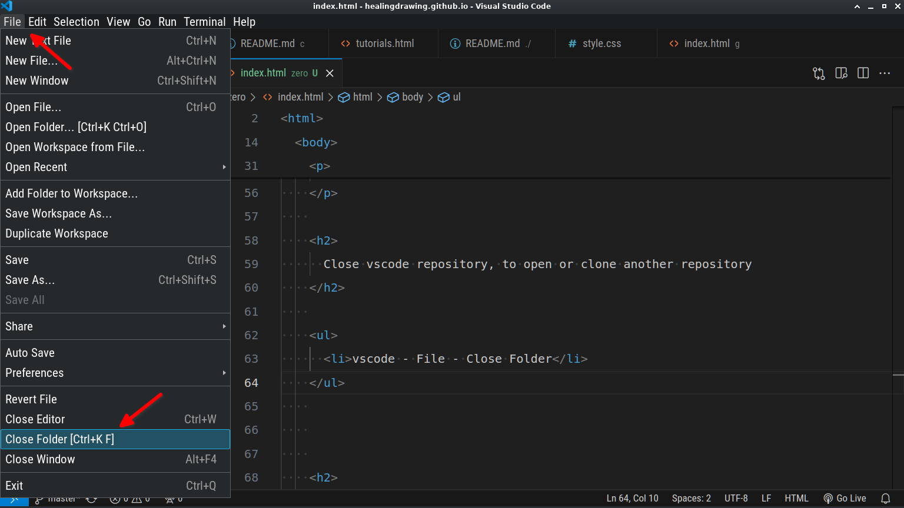
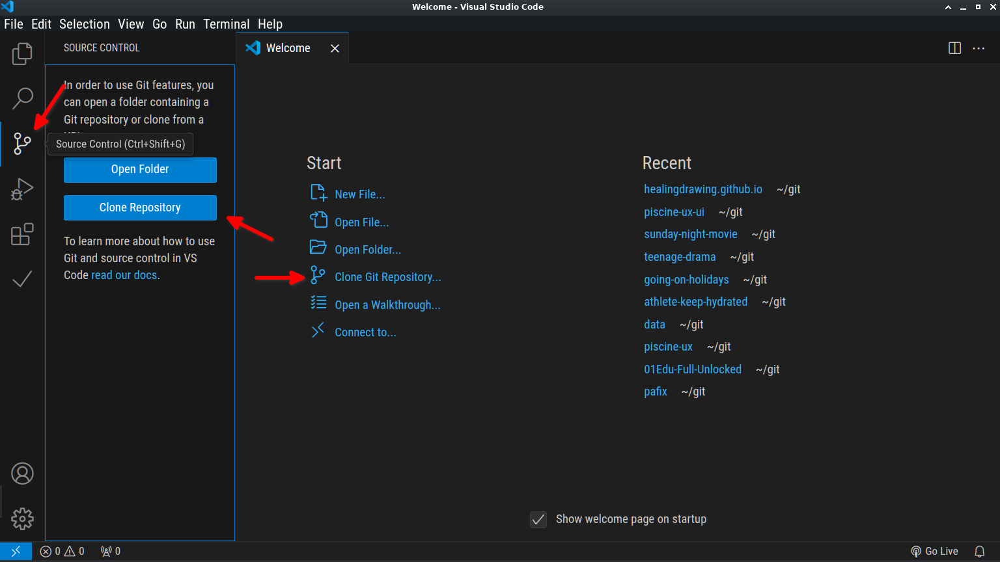
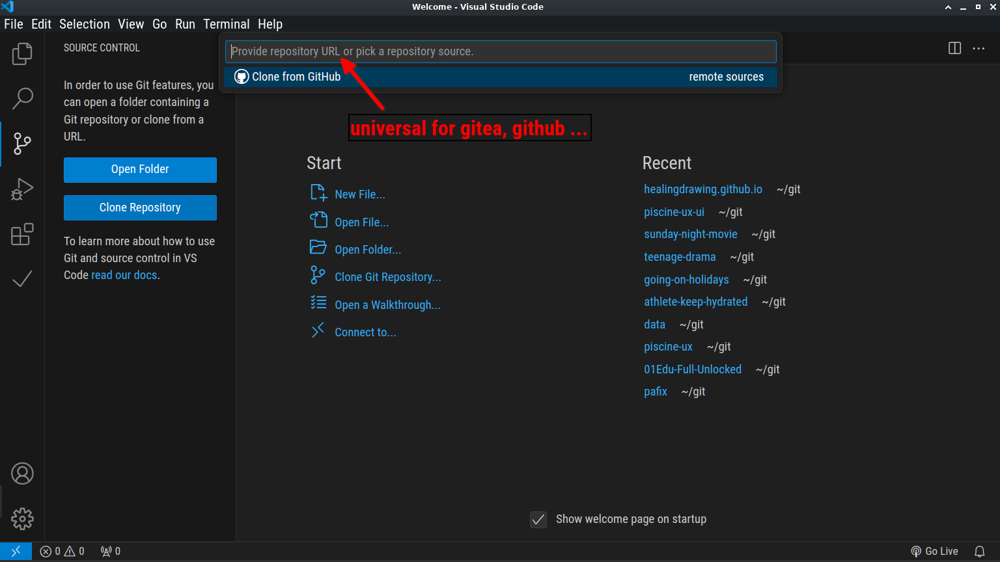
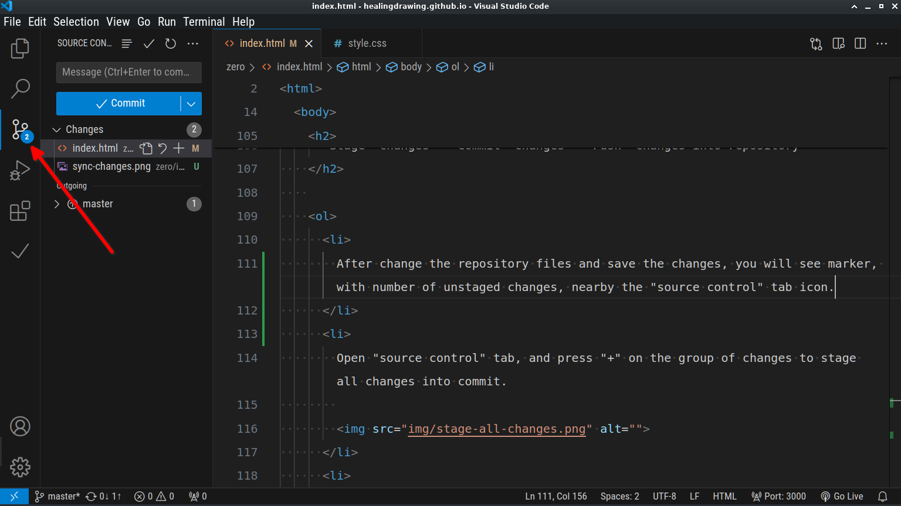
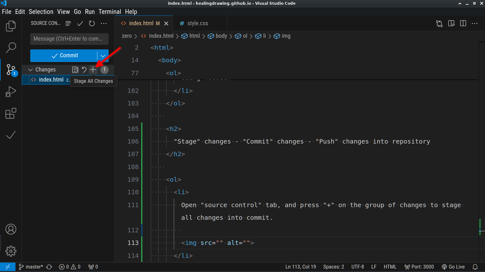
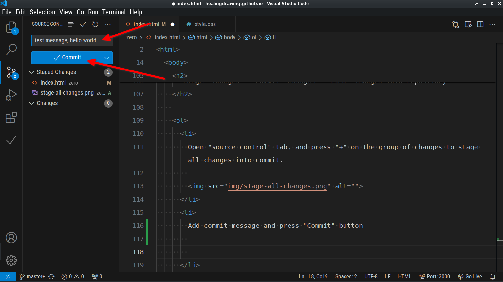
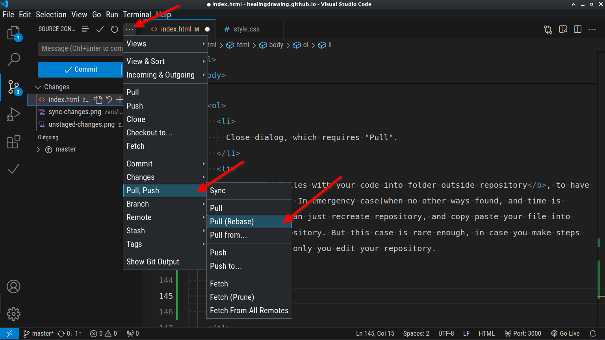

Can be useful for the grit:lab pisciners, who does not have any coding background.
More simple(user friendly) methods to do common stuff. Can safe your time at the beginning, in case you have zero skills in coding and vscode.
Use terminal only when it is required(for quests and tasks). Terminal not the most user friendly interface, and any mistyping can easily harm your repository.
More safe way to manage repository is make "clone", "pull", "commit", "push" commands using vscode (visual studio code) - the lightweight ide already installed on macos workstations(your computers). It does not break any rules.
Details
-
Copy all your solutions into github repository, because gitea account not available remotely, so you can not learn the code before sleep from your place(outside the grit:lab campus). Your free personal github available remotely, and you can learn solutions remotely.
-
Copy all your solutions into folder outside repository, before allow to any initiative person to help you make commits and pulls using terminal, because terminal is not safe absolutely. And in case of your helper fail, you will be victim, and the helper will be just surprised.
-
If you made wrong commit, just overwrite the mistake by new correct commit. This approach not the perfect one, but much more safe than try to rollback or undo commit, what can easily fuckup everything in beginner's opinion, and produce headache and non-mandatory frustration.
-
When vscode requires "pull", before do it, copy all visible files (your code/solutions) from repository folder into another folder, for emergency case, to always have backup.
-
When create repository, check the option "initialize repository. Add readme ..." .
-
The "vscode" has integrated terminal tab, which works the similar way as system terminal. On macos press "Command + j" to show/hide panel with terminal tab.
-
After clone repository, you must once configure the repository(in terminal), add desirable name and desirable email, to identify your self inside git(f.e. if someone will collaborate with you or send message).
Open terminal in repository folder(repository path):
type "git config user.name desirablenamewithoutspaces" press Enter.
type "git config user.email your_Email_You_Used_For_Gritlab_Site_Login_To_Pass_Puzzle_Etc" press Enter.
VSCODE (user friendly dialogs/buttons, but not terminal commands)
Close vscode repository, to open or clone another repository
- vscode - File - Close Folder

Clone repository using vscode user interface
-
Choose or create the folder into system(on desktop, or using macos "finder"), to use this folder to lot of the repos you will clone later. You can name it "git", "myrepos" etc. To prevent mess in file system later.
-
Copy repository url or link(press the special button in gitea interface).
-
Close the repository, opened in vscode before, or open the vscode.
-
Open "source control" tab, and click "clone repository" button or link in list.

-
Paste the link, copied from gitea, into popup input field and press Enter.

-
Open desirable folder using dialog, and press "Select As Repository Destination" button.
-
When clone process will be completed, choose "open" to start edit repository using vscode.
"Stage" changes - "Commit" changes - "Push" changes into repository
-
After change the repository files and save the changes, you will see marker, with number of unstaged changes, nearby the "source control" tab icon.

-
Open "source control" tab, and press "+" on the group of changes to stage all changes into commit.

-
First always add commit message, then press "Commit" button

-
Press "Sync Changes" button, and wait while process complete.
-
If every thing was ok, now your changes uploaded into internet remote git(gitea, github ... ) repository. Sometimes, when sequence of steps above was executed incorrect, the vscode requires make "pull" first.
The case when vscode requires "Pull" first.
-
Close dialog, which requires "Pull".
-
Copy all files with your code into folder outside repository, to have simple backup. In emergency case(when no other ways found, and time is limited) you can just recreate repository, and copy paste your file into recreated repository. But this case is rare enough, in case you make steps properly, and only you edit your repository.
-
Press "Pull (Rebase)", and agree with dialog. After that repository will be updated with last data from remote version of the repository.

-
Check the updated version of code is correct, then try "Sync Changes" again.
- If something not good enough, f.e. version of code not enough fresh, modify the code(use your backup) and continue common way.
Everything else in your responsibility. Have a productive piscine.
To contact the creator, use homepage of this site, find "discord invite" or "contacts" links at the bottom of the page.